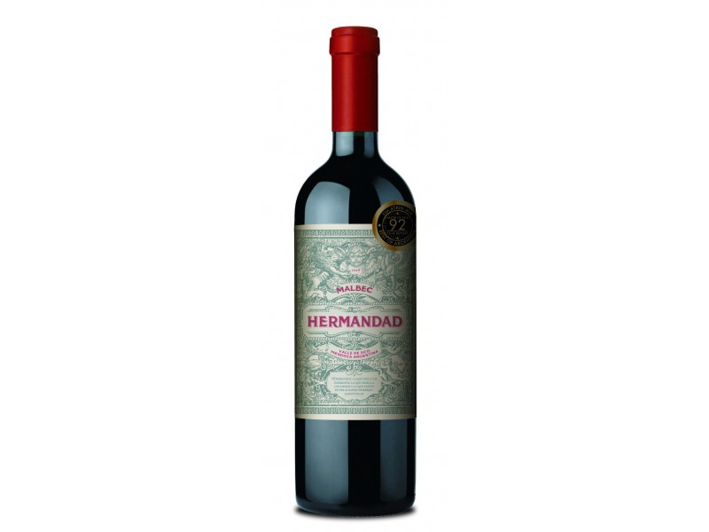
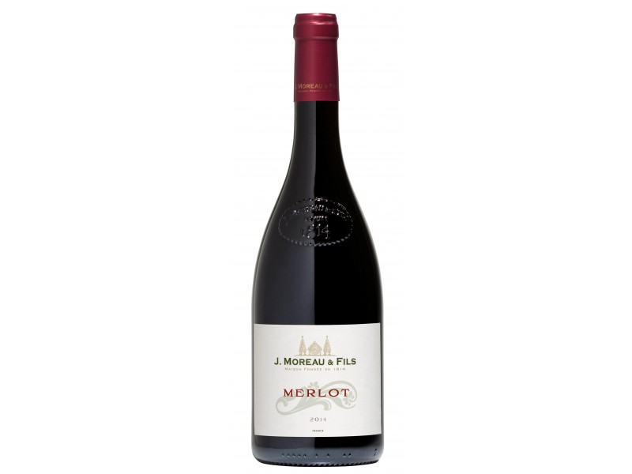
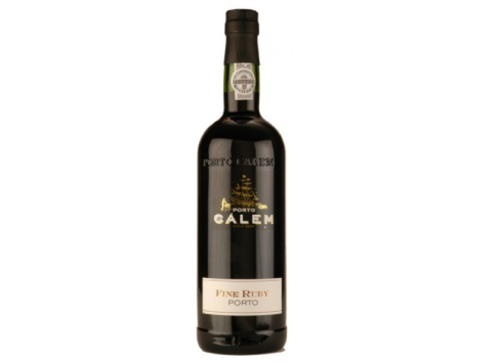

Červená vína
Třídění produktů
▽Seřadit podle:
Maximální cena:
Barva vína:
Objem:
Země původu:
Cukernatost:
Kategorie vína:
VÝBĚR NEJLEPŠÍCH ČERVENÝCH VÍN
Vyrábí se pouze z modrých hroznů (protože červené barvivo se nachází pouze v těchto odrůdách, a to ve slupkách bobulí). Při jeho výrobě se mošt nechá několik dní kvasit se rmutem (nakvášení). Slupky tak zůstávají v kontaktu s kvasící šťávou. Kvašení probíhá delší dobu a zpravidla za vyšší teploty než u bílého vína. V červeném vínu jsou tak ve vyšší míře třísloviny.

Hermandad Malbec 2015
550 Kč

Merlot Vin de France 2018
175 Kč

Fine tawny
310 Kč
×